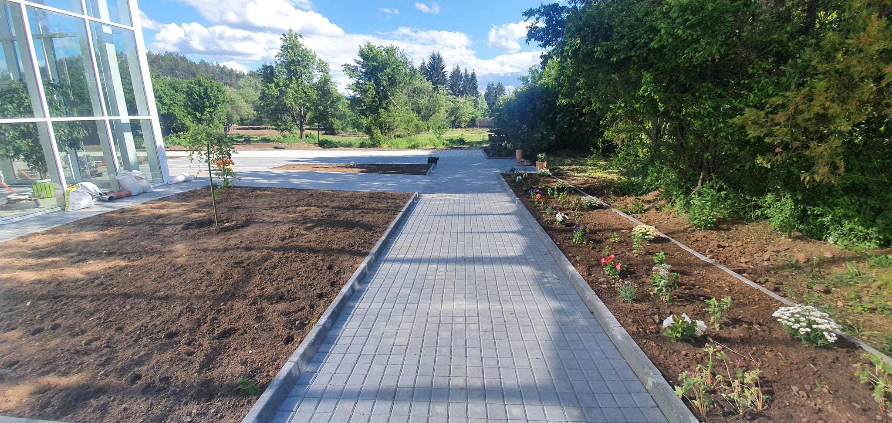
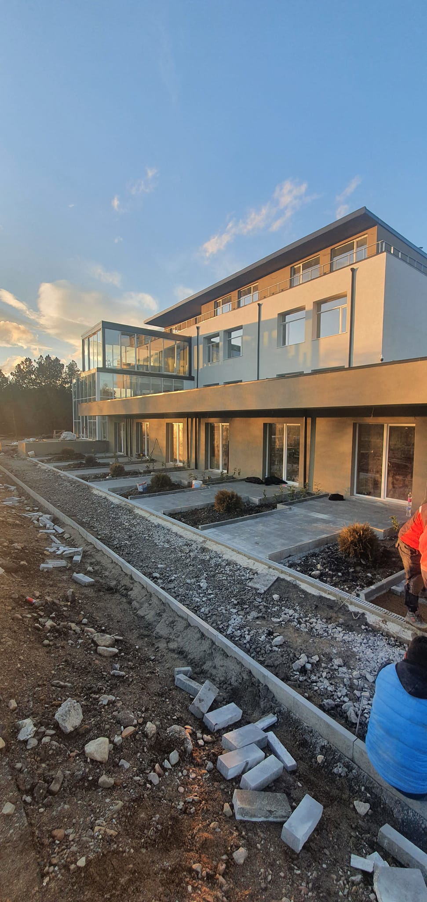
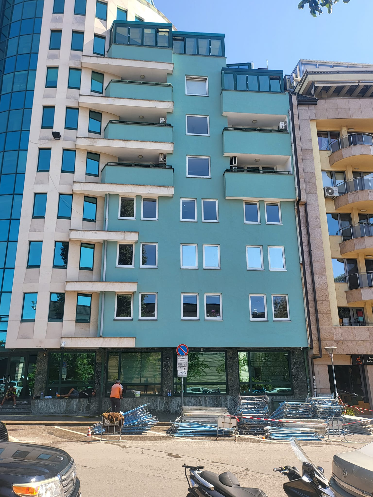

VakInvest 86 — a construction company's digital home
A custom WordPress theme for ВАК ИНВЕСТ 86 ЕООД, a Bulgarian construction firm — built so a non-technical team can run every page, service and project from the WordPress admin, with no page-builder bloat.
A real construction business that couldn't be edited
VakInvest needed more than a brochure site. They run multiple service lines — design, electrical & plumbing, finishing works, insulation, and road construction — plus a fleet of heavy machinery and a growing portfolio of completed projects. All of it had to live on the site and stay editable by the team themselves, in Bulgarian, without touching code.
Off-the-shelf page builders would have meant slow pages, a tangled admin, and a layout that drifted every time someone edited it. The brief was a fast, structured theme where content has a real shape: services, projects, machinery and certificates each behave consistently.
What we owned, end to end
We designed and built the theme from scratch — no starter theme, no block-editor dependency — and modelled the content so the client can manage it from the standard WordPress admin.
- UI design & visual identity
- Custom WordPress theme (PHP)
- Content model & Customizer fields
- Projects custom post type + taxonomy
- Responsive front-end (vanilla CSS/JS)
- Contact form: nonce, GDPR, captcha
Structured content, a clean brand, zero bloat
An 8-section homepage with a hero slider sets the tone; five service pages share a sticky services sidebar; a custom Проекти post type powers a filterable portfolio with a gallery lightbox; and a certificates page splits ISO certificates from chamber credentials. The palette is navy and teal with Montserrat headings over Inter body text — calm, credible, and unmistakably "construction".




What we shipped
A complete, self-manageable theme. The build-scope numbers below are exact; the impact numbers are placeholders — replace them with real figures once the site has been live and measured.